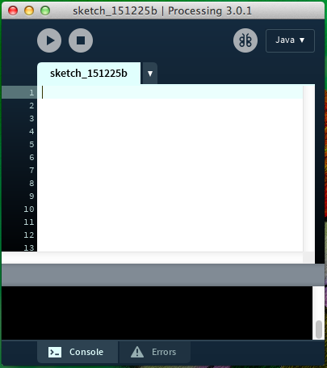
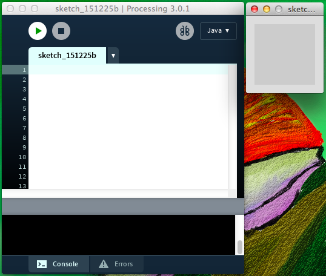
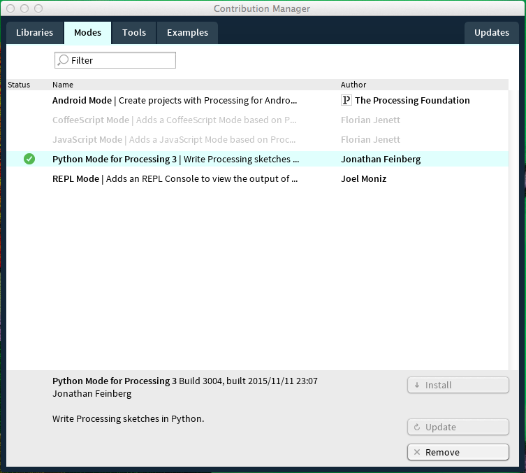
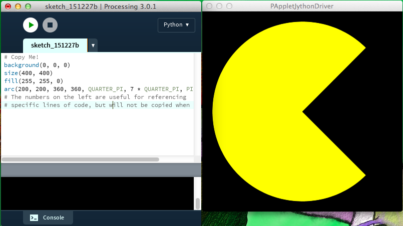

The main goal of this course is to teach the important theories behind computer science. With that in mind all of the lessons will have a programming component. When you get to code something one of the first things you have to decide is the language you will program in. Programming languages are not like human languages, but rather a way for humans to comunicate to computers what we want them to do. Choosing the right language for a job can be a difficult task for inexperienced programmers. Fortunately I have already chosen Processing for you! Processing is a fun language that should be easy to get up and running quickly. Additionally you can create digital art, interactive experiences, and data visualizations with it. AND if that wasn't enough for you we will be using the Python mode, an increasingly popular language (and one of my favorites). If you become proficient in Processing you will be able to transfer much of that knowledge to Python easily. For some inspiration on what you may be able to create with Processing I invite you to check out the gifs at Bees & Bombs a personal favorite of mine. They create all of their gifs programmatically using Processing.
Another benefit to using Processing is its general popularity. This means if you get stuck on something you can likely find assistance on the internet. The first thing you should be aware of though is its homepage, which has lots of useful links to tutorials on Processing. In particular their reference page is something that is exceptionally useful. But before we get to all of that you will have to download Processing HERE. They support all major operating systems so you should be covered. This will provide you with the Processing application. The notation here is a little ambiguous, since Processing can refer to the programming language as well as this application you use to compile and run Processign code. When you open it you will be able type your code and run your program. The first time you run the application there will be some initial setup, just follow the onscreen instructions.
The next step is to make sure you can run the program. First you should open up the Processing application. You will see a window that looks something like this:
In the top left of the window you can see two buttons. A triangle and a square. Following the same convention as VCRs from the 80s the triangle will run your program, and the square will stop it. When you click the play button with no code inside you should see something like this. Notice that while the new window is open and running the triangle will be green.
In the top right you will see the base language Procesing will be using. It says Java by default, but we will be using Python. To change the language click the box that says Java, then choose "Add Mode". You will see a number of options. Install the one that says Python as you can see below.
From now on that box should say Python or else the code I provide will not work. To change just click the box and select Python. Now let's run our first real program! Since I haven't taught any coding yet I've included a small program below. You should copy and paste the code snippet below into the Processing window.
# Copy Me! background(0, 0, 0) size(400, 400) fill(255, 255, 0) arc(200, 200, 360, 360, QUARTER_PI, 7 * QUARTER_PI, PIE) # The numbers on the left are useful for referencing # specific lines of code, but will not be copied when highlighted.
You may be able to guess what some of this code does, but it's ok if all of it means nothing to you. If you get it to run correctly you should see a friendly yellow friend...
Finally be sure you can save your program for later use. Going to "File > Save" will open a dialogue for saving. I recommend that you set up a folder (aka directory) somewhere to save all of your Processing files. When you save Processing will create a directory with two files inside. One will have a .pyde extension, this is where your code is saved. The other file will have a .properties extension, you can just ignore this file. To open your saved code you will run Processing and open up the .pyde file. As a final aside you should not move this file independently, you should only move the directory as a whole.
For all of the lessons I will be including some exercises to reinforce the ideas from that section. For this introduction there isn't anything too important, but as I've already mentioned Bees & Bombs is fun way to get a better sense of some cool things you can do with Processing. For some other cool projects done with Processing you can check out the exhibition page of Processing's home webpage. Feel free to poke around Processing's webpage. They have some nice tutorials and examples there. In particular their getting started tutorial has some additional detail not covered here.
All of the future lessons should include parting thoughts where I will reiterate what I think are the most important concepts of the lesson. For this all I have to say is getting started is usually the hardest step to take when learning computer science. Going forward there will be more gratifying things that you will be able to do. So if you've made it this far congratulations and I hope you continue onwards to more interesting topics.